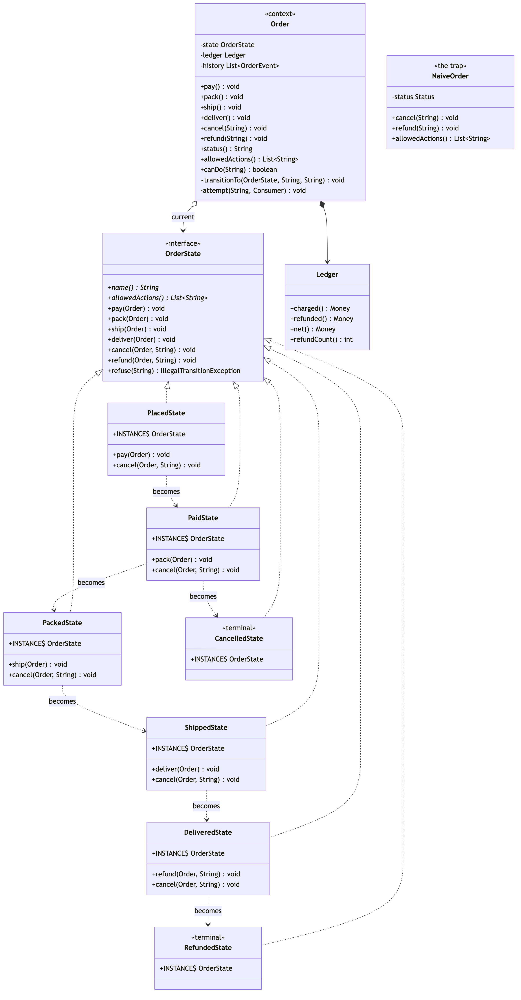

State Pattern
Demonstrates the Behavioural State design pattern using the lifecycle of an order in an online shop as an example.
OrderState— the interface, and the whole pattern. It declares the six requests an order can receive, and gives every one of them a default body that throws. A state does not list what it forbids; it lists what it allows, by overriding, and everything else refuses without a line of code being written.PlacedState/PaidState/PackedState/ShippedState/DeliveredState/CancelledState/RefundedState— one class per state, each holding everything that is true at that point in the lifecycle: what it accepts, what that does, and which state comes next. The two terminal states override nothing at all, which is exactly why they accept nothing at all.Order— the context. Every public method is a single delegation to whichever state it is holding; there is noswitchand noifthat mentions a status anywhere in it.transitionTois package-private, so an order's state changes only as a consequence of asking it to do something.IllegalTransitionException— the refusal, built from the state's ownallowedActions()so the message cannot go stale: cannot refund a SHIPPED order: the only thing it will accept is deliver. Two states overridecancelpurely to refuse it with a better reason than that default.Ledger— the evidence. Money taken and money given back, in pence, so the cost of a wrong answer is a number in the output rather than an assertion.OrderEvent— the audit trail. Every move and every refusal is recorded, because "somebody tried to cancel this after it shipped" is the line you want when you are reading a support ticket.NaiveOrder— the trap, kept for contrast. One enum and a chain of conditionals per method. Its happy path is still correct on purpose: the argument is drift, not incompetence. Itscancelwas phrased as "anything that has not arrived yet", so it refunds a parcel that is on a van; itsrefundwas widened to acceptCANCELLED, so it pays the customer twice; and itsallowedActions()— a third copy of the same rules, written for the screen — is correct and therefore disagrees with both.Money/OrderLine— the supporting types. Pennies aslong, so the-£97.49printed below is the amount the shop is actually out of pocket.OrderStateDemo— runnable entry point that shows the status field paying a customer twice, the same lifecycle as one class per state, the refusals and where they come from, the button list per state, an eighth state declared inside the demo file itself, and an honest note about what the pattern cost.
Run
./gradlew run=== 1. The trap: one rule, written out in three chains ===
A SHIPPED order, and the screen the agent is looking at:
status : SHIPPED
buttons drawn : [deliver]
cancel() anyway : accepted — status is now CANCELLED
ledger : charge £89.99; refund £89.99
The parcel is on a van and the customer has their money back.
A CANCELLED order, already refunded once:
ledger : charge £97.49; refund £97.49
refund() anyway : accepted — status is now REFUNDED
ledger : charge £97.49; refund £97.49; refund £97.49
the shop is out : -£97.49 over 2 refunds
Both are one condition, in a chain that was copied and then edited.
=== 2. The pattern: one class per state ===
A-1001 PLACED £97.49 grace@example.com
history:
pay PLACED -> PAID £97.49 taken
pack PAID -> PACKED 2 item(s) boxed at Reading
ship PACKED -> SHIPPED courier collected, consignment CON-A-1001
deliver SHIPPED -> DELIVERED signed for, CON-A-1001
ledger : charge £97.49
Order has no switch and no status checks. Every one of its
methods is a single delegation, and the state decides.
=== 3. The refusals, and where they come from ===
A-1002 (SHIPPED), asked to cancel:
refused: cannot cancel a SHIPPED order: it is already with the courier — the customer must refuse delivery or return it
A-1003, paid and then cancelled:
ledger after cancel : charge £97.49; refund £97.49
A-1003 (CANCELLED), asked to refund:
refused: cannot refund a CANCELLED order: it is final, and nothing more can happen to it
ledger unchanged : charge £97.49; refund £97.49
Neither refusal is written down anywhere as a rule.
CancelledState simply does not override refund, and the
default in the interface says no. The refusals are recorded:
refund CANCELLED -> CANCELLED refused: it is final, and nothing more can happen to it
=== 4. Which buttons to draw ===
PLACED [pay, cancel]
PAID [pack, cancel]
PACKED [ship, cancel]
SHIPPED [deliver]
DELIVERED [refund]
REFUNDED []
One call, no conditionals, and it cannot disagree with the
methods — the answers and the buttons live in the same class.
AT-LOCKER [deliver]
A-1005 (AT-LOCKER), asked to cancel:
refused: cannot cancel an AT-LOCKER order: the only thing it will accept is deliver
delivered deliver AT-LOCKER -> DELIVERED collected from the Bristol locker
An eighth state, declared in this demo file. Order did not change.
Neither did any other state — except the one that has to point
at it, and that is the honest cost, in section 5.
=== 5. What it cost ===
Seven classes where there was one enum, and the transition
table no longer exists anywhere you can read it — it is
distributed across the states, one arrow at a time. Adding
AT-LOCKER above meant editing whichever state hands over to
it. For a small, stable machine an enum and a map of
permitted transitions is often clearer, and you should use it.
Use this when the BEHAVIOUR varies by state, not just the
permissions — when cancelling a PAID order and a PACKED one
do genuinely different work, as they do here.Section 1 and section 2 handle the same order lifecycle. The difference between them is the whole project: in the first, the rule lives in six places and two of them have drifted; in the second, it lives in seven classes and the places it does not live are refusals.
Test
./gradlew test57 tests across three classes.
OrderStateTest has one nested group per state, and tests the refusals as carefully as the transitions — every one of them is the absence of an override rather than a check somebody wrote, so a suite that only walked the happy path would prove nothing about them.
OrderLifecycleTest covers the context: what the history records, what a refusal leaves behind, and an eighth state added without touching Order. Its most useful test walks all seven states and all six actions — forty-two combinations — and asserts that canDo(action) predicts whether the call throws. That test cannot pass against NaiveOrder, and the reason it cannot is the bug.
NaiveOrderTest holds the comparison: the two drifts pinned as passing tests that assert the wrong behaviour — a shipped order cancelled and refunded, and a cancelled order refunded a second time until ledger().net() reads -£97.49 — each paired with the identical scenario refused by the state version.
Learning Material
Start here if you are new to the pattern — the docs are ordered as a learning path.
| Document | What it covers |
|---|---|
docs/prerequisites.md | What to know and install before you start |
docs/problem-statement.md | The problem the pattern solves, and why the naive approach hurts |
docs/state-pattern-explained.md | The pattern itself, the code walked through, pitfalls, and comparisons |
docs/class-diagram.md | Static structure |
docs/uml-diagram.md | Runtime call flow, and the state machine it implements |
docs/animation.html | Animated, step-by-step walkthrough — open in a browser. Optional narration via the Narration button |
docs/session.md | A 60-minute guided session plan for teaching it |
docs/youtube.md | Title, description, chapters and thumbnail for publishing the video |
docs/thumbnail.png | The 1280×720 image to upload as the YouTube thumbnail |
docs/spec.md | The project specification — problem, code, video and publishing quality bar. Also as spec.html |
video/ | A narrated video, plus the script and build pipeline |

The pattern in one picture

Video
video/state-pattern-explained.mp4 — 1080p, narrated. An audio-only version is alongside it. See video/README.md to rebuild or re-record it.